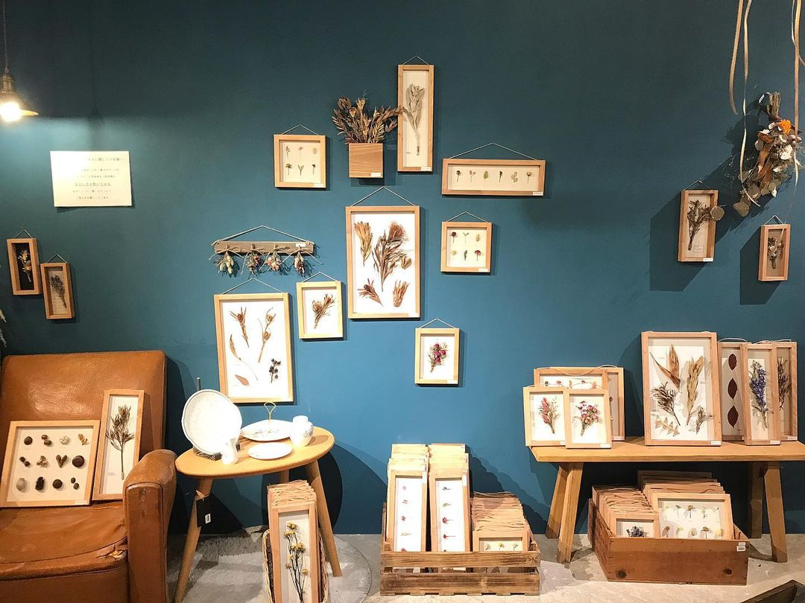
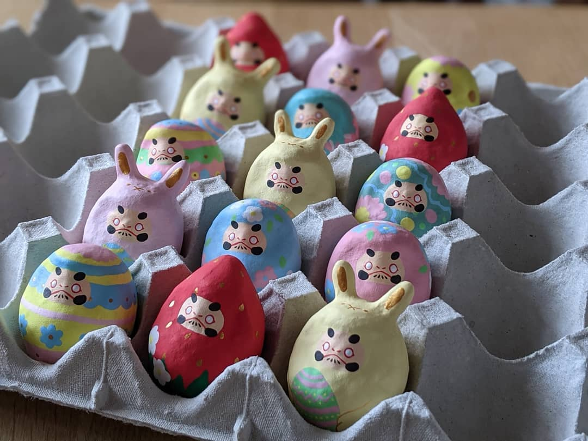
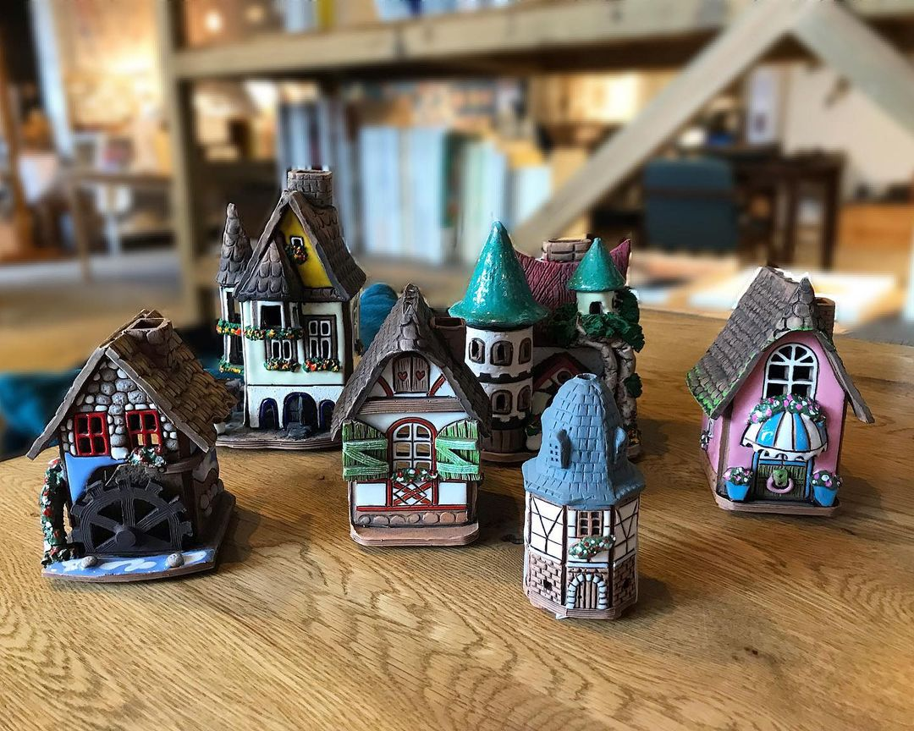

Scroll
⌵
-

ドライフラワーパネル
手作りの額にドライフラワーを標本風に貼り付け。
全て1点物です。お好みのデザインをお選びください。
creator:milwaukie -

十和田コースター
レストランなどで見かけるスレートプレート。
チーズやサラダ、お肉などお好きな食べ物にのせるだけで、一気にお店の雰囲気に。
creator:大島組 -

だるま
一点一点丁寧に絵付けされる、個性豊かなだるまたち。
イースターや春がテーマのだるまがかわいらしいです。
creator:山口さくら -

苔玉
現在ブームにもなっている苔玉です。
和のインテリアグリーンとしてお一ついかがでしょうか。 -

ハンカチ＆手ぬぐい
木版を押して模様を染める‘ブロックプリント’という技法で作られています。
ご自宅用やお土産にもおすすめです。 -

コーヒーキャンドル
ふんわりコーヒーの良い香りがして癒されます。
ご自宅用にも、コーヒー好きの方へのお土産にもおすすめです。
creator:miso -
フェルトコースター
フェルトならではのふわふわ優しい手触りです。
今の季節にぴったりな春色でご用意致しました。
creator:HARUCCO -

キャンドルハウス
リトアニア輸入のキャンドルハウスです。
おとぎ話に出てきそうなかわいらしいお家をたくさんご用意しています。
creator:Labdien